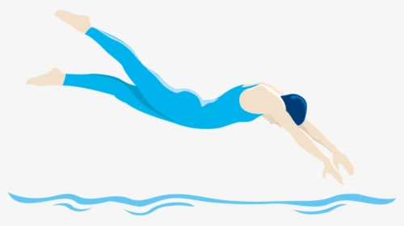
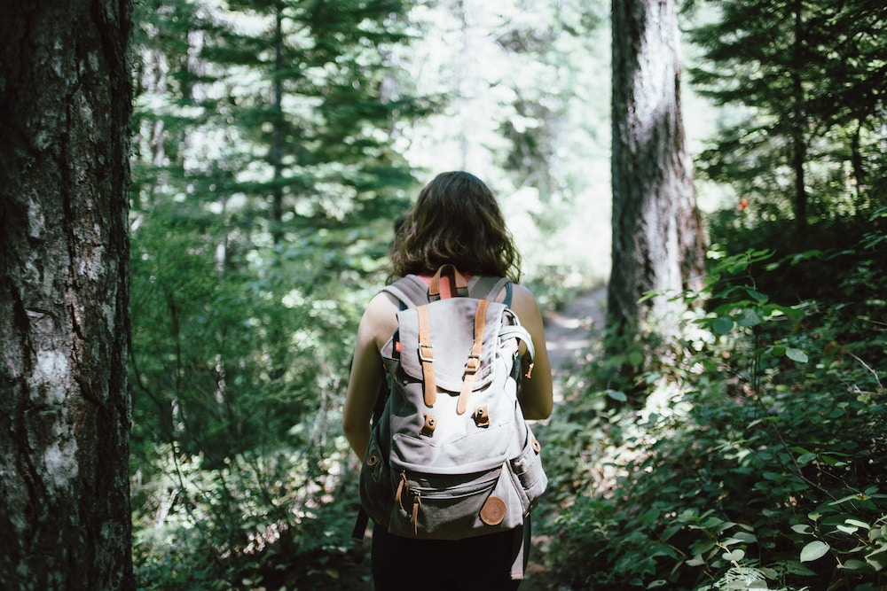
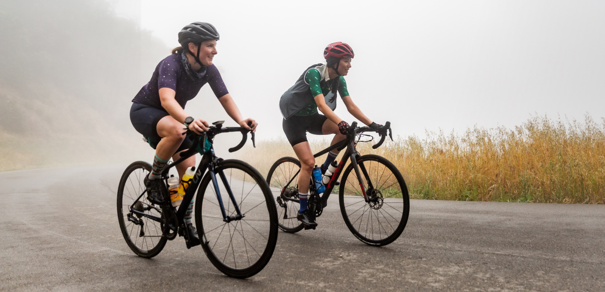

Swimming
Swimming is my hobby and a great way to stay fit, working out the entire body and improving cardiovascular health. It provides a sense of freedom and tranquility, whether in a pool or at the beach.
Books
I have always enjoyed reading from a very young age. I enjoy reading non-fiction as well as fiction in genres such as thriller, mystery, generational stories, and non-linear timelines.
Nature
I love to be outside, especially in the warmer months, to camp or go for a hike with my partner Josh and our dog Cleo.
Cycling
Cycling is my hobby, allowing me to explore new places while staying fit and enjoying the outdoors. It offers a sense of freedom and adventure as I ride through different terrains and scenic routes.
